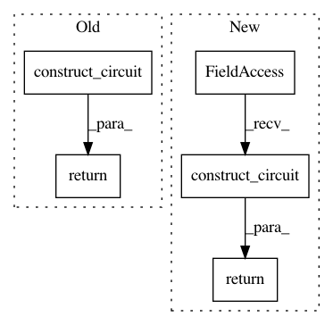

a8df012ad4603477078a8274f03d7491b6ccafe8,qiskit/aqua/components/iqfts/approximate.py,Approximate,_build_circuit,#Approximate#Any#Any#Any#,49
Before Change
def _build_circuit(self, qubits=None, circuit=None, do_swaps=True):
ftc = FourierTransformCircuits(self._num_qubits, approximation_degree=self._degree, inverse=True)
return ftc.construct_circuit(qubits, circuit, do_swaps=do_swaps)
After Change
self._degree = degree
def _build_circuit(self, qubits=None, circuit=None, do_swaps=True):
return ftc.construct_circuit(
circuit=circuit,
qubits=qubits,
inverse=True,
approximation_degree=self._degree,
do_swaps=do_swaps
)
In pattern: SUPERPATTERN
Frequency: 3
Non-data size: 5
Instances
Project Name: Qiskit/qiskit-aqua
Commit Name: a8df012ad4603477078a8274f03d7491b6ccafe8
Time: 2019-04-14
Author: shaohan.hu@ibm.com
File Name: qiskit/aqua/components/iqfts/approximate.py
Class Name: Approximate
Method Name: _build_circuit
Project Name: Qiskit/qiskit-aqua
Commit Name: a8df012ad4603477078a8274f03d7491b6ccafe8
Time: 2019-04-14
Author: shaohan.hu@ibm.com
File Name: qiskit/aqua/components/qfts/approximate.py
Class Name: Approximate
Method Name: _build_circuit
Project Name: Qiskit/qiskit-aqua
Commit Name: 1e5380a7026d8ff3441c49441b3e10da91bb553d
Time: 2019-02-11
Author: shaohan.hu@ibm.com
File Name: qiskit/aqua/components/oracles/esop_oracle.py
Class Name: ESOPOracle
Method Name: construct_circuit